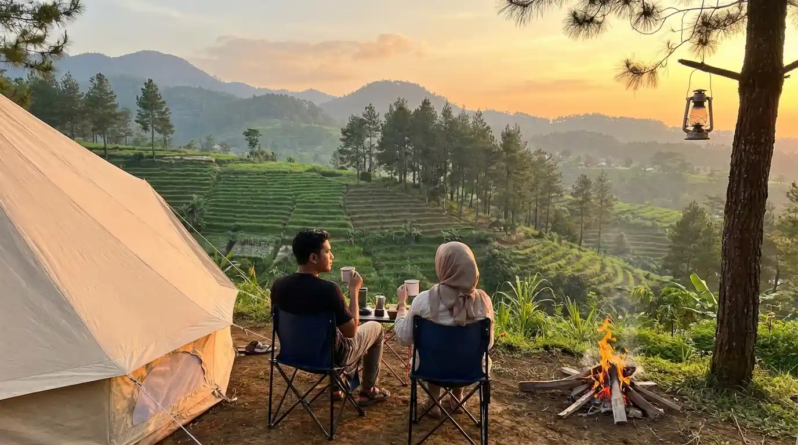
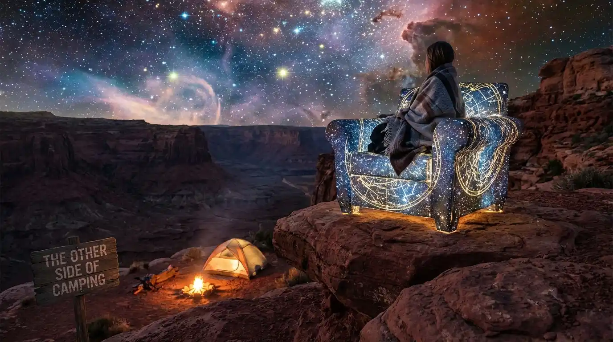
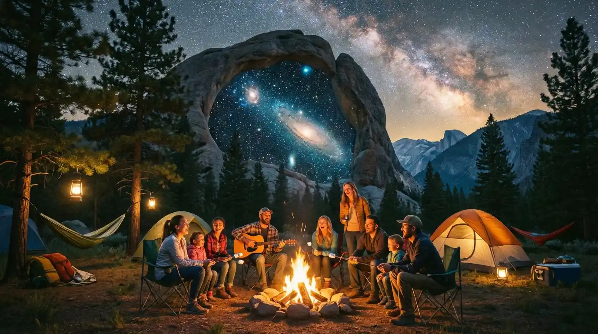
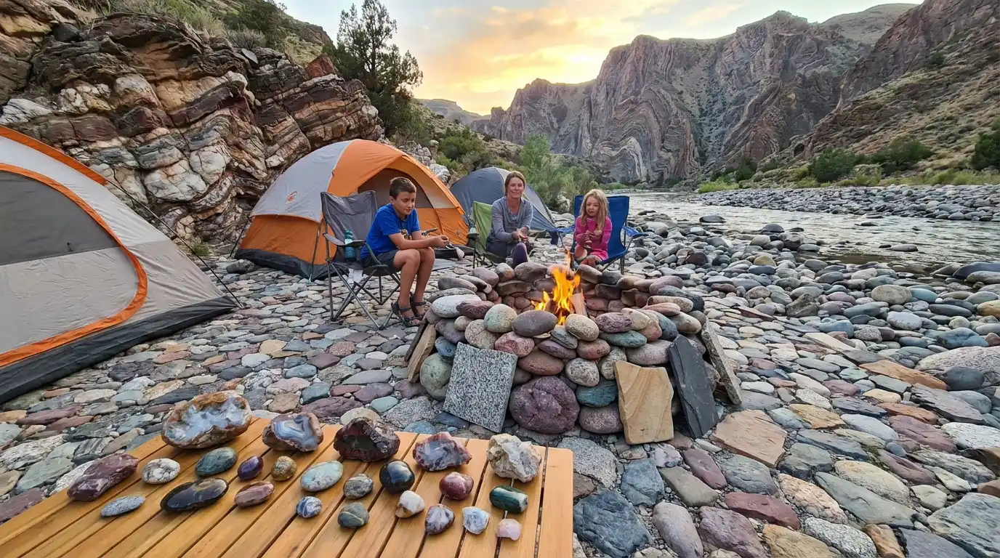
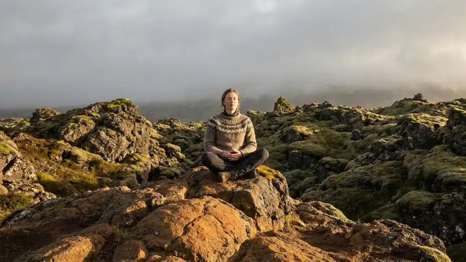
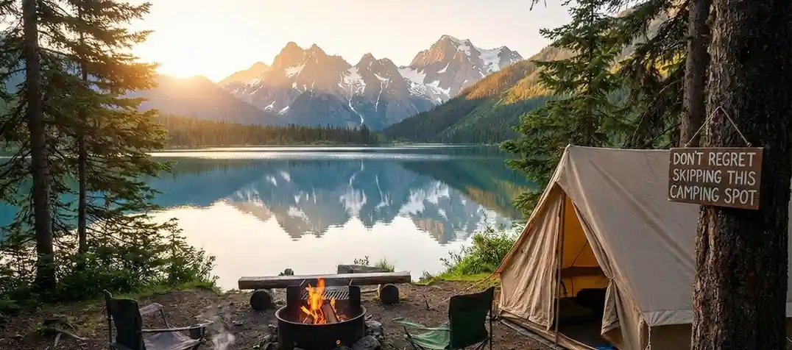
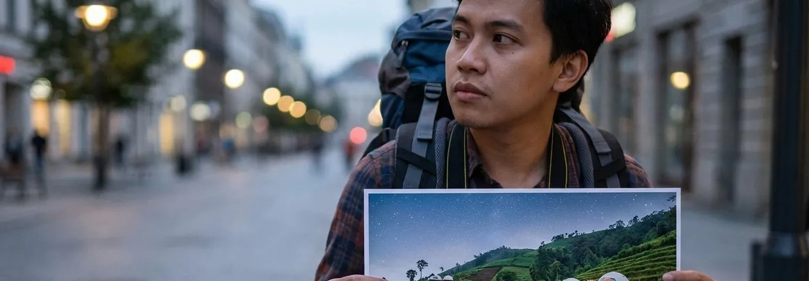

Area Perkemahan Sangat Luas: Privasi Terjaga Saat Camping
Cari tahu betapa nyamannya area perkemahan yang sangat luas di Batu Malang. Temukan keuntungan jarak antar tenda lega yang memastikan privasi maksimal.
Baca Artikel.webp)
Udara di Sini Sangat Bersih dan Segar: Manfaat Kemah Secara Alami
Temukan betapa bersih dan segarnya udara di pegunungan Batu Malang. Pengalaman camping yang bukan cuma soal refreshing, namun ikut menyehatkan paru-paru Anda.
Baca Artikel.webp)
Pendar Lampu Kota: Menikmati Gemerlap City Light Batu Malang
Pemandangan pendar lampu kota yang tak pernah gagal menyihir setiap pasang mata dari ketinggian area camping Batu bersama fasilitas premium kami.
Baca Artikel.webp)
Dingin Menusuk Tulang: Bertahan dan Menikmati Ekstremnya Cuaca di Batu
Pengalaman menghadapi cuaca dingin menusuk tulang saat camping di Batu Malang. Temukan tips bertahan dan menikmati setiap momen beku dengan fasilitas dari Citylightscamp.
Baca Artikel.webp)
Jauhkan Barang dari Dinding Tenda: Rahasia Anti Bocor Saat Camping
Pentingnya menjauhkan barang dari dinding tenda saat camping di area dingin seperti Batu Malang untuk menghindari rembesan embun dan kondensasi.
Baca Artikel.webp)
Bersihkan Kerikil Tajam: Rahasia Nyaman Tidur di Tenda Camping
Pentingnya tahapan bersihkan kerikil tajam sebelum mendirikan tenda. Tips sederhana ini menjamin kenyamanan maksimal saat menginap di alam terbuka.
Baca Artikel
Memiliki Paket-Paket Sewa Ekonomis, Rahasia Liburan Hemat di Batu
Ingin liburan tapi khawatir budget membengkak? Citylightscamp memiliki paket-paket sewa ekonomis dengan fasilitas tenda premium di Batu Malang.
Baca Artikel
Pentingnya Lampu Tenda dan Senter Saat Camping di Batu
Pentingnya lampu tenda dan senter saat aktivitas camping di Batu Malang. Temukan tips memilih pencahayaan camping yang maksimal.
Baca Artikel
Fasilitas Area Api Unggun Saat Camping di Batu Malang
Temukan asyiknya fasilitas area api unggun yang bisa digunakan di tempat camping Batu Malang. Sempurnakan malam sejuk Anda dengan kehangatan dan kebersamaan.
Baca Artikel
Berlindung di Balik Kain Tenda Camping: Menemukan Kedamaian Hakiki
Rasakan pengalaman reflektif berlindung di balik kain tenda camping di Batu Malang. Temukan ketenangan, lepaskan penat, dan nikmati hembusan alam yang menyejukkan.
Baca Artikel
Sensasi Menginap di Tenda Camping Malam Hari di Batu Malang
Rasakan sensasi menginap di tenda camping malam hari di Batu Malang dengan hembusan udara dingin, pemandangan city light menawan, serta fasilitas premium paripurna.
Baca Artikel
Bumi Perkemahan Coban Talun: Destinasi Camping Keluarga di Batu
Panduan lengkap wisata Bumi Perkemahan Coban Talun Batu. Nikmati pengalaman camping keluarga, spot foto instagenic, dan pesona alam air terjun yang memukau.
Baca Artikel
Membangun Masa Depan yang Lebih Baik Melalui Kedekatan dengan Alam
Langkah nyata menyatu dengan alam sebagai investasi masa depan yang lebih baik. Temukan ketenangannya di Citylightscamp Batu Malang.
Baca Artikel
Langkah Nyata Hari Ini adalah Harapan Besar untuk Masa Depan
Mengambil langkah nyata hari ini bersama alam adalah pondasi harapan besar di masa depan. Temukan inspirasinya lewat pengalaman camping di Citylightscamp Batu Malang.
Baca Artikel
Review Jujur Paket Camping Batu Malang dengan Keindahan City Light
Ulasan jujur mengenai pengalaman menginap paket camping Batu Malang di Citylightscamp, nikmati fasilitas premium tanpa ribet.
Baca Artikel
Review Camping Ground Batu Terbaru: Pengalaman Terbaik Menikmati City Light
Ulasan mendalam mengenai destinasi camping ground terbaru di Batu, temukan perpaduan sempurna antara tenda premium dan pemandangan luar biasa.
Baca Artikel
Pesona Sunrise di Spot Paket Camping Batu Malang
Jelajahi pesona sunrise di spot paket camping Batu Malang. Pengalaman berkemah bersama Citylightscamp yang menawarkan panorama fajar luar biasa.
Baca ArtikelRahasia Spot Sunrise Terbaik di Ground Camping Batu Malang
Temukan rahasia spot sunrise terbaik di ground camping Batu Malang. Pengalaman berkemah Citylightscamp tak terlupakan menyambut pagi.
Baca ArtikelRekomendasi Camping Asyik di Batu: Menikmati Indahnya Alam dan City Light
Mencari rekomendasi tempat camping asyik di kawasan Batu Malang? Artikel ini memberikan referensi terbaik untuk pengalaman liburan di alam terbuka.
Baca Artikel
Tahta Bintang di Tanah Batu: Menikmati Sisi Lain City Light
Malam di Batu Malang selalu punya cerita tersendiri. Dari gemerlap lampu kota hingga taburan bintang, mari nikmati sisi lain dari keindahan alam ini.
Baca Artikel
Langit Bintang di Batu: Asyiknya Camping Pegunungan
Bosan dengan hiruk-pikuk kota? Nikmati gemerlap bintang dan asyiknya camping pegunungan di Batu Malang dengan fasilitas premium.
Baca Artikel
Simfoni Alam Batu yang Memukau: Sebuah Perjalanan
Temukan simfoni alam Batu Malang yang memukau dan ciptakan liburan tak terlupakan dengan pemandangan city light menawan.
Baca Artikel
Satu Malam Penuh Keseruan Merasakan Camping
Cari tahu bagaimana satu malam penuh keseruan merasakan camping di Citylightscamp Batu Malang dengan fasilitas premium dan pemandangan luar biasa.
Baca Artikel
Sebuah Perjalanan Rasa dalam Malam Kebersamaan
Temukan makna kebersamaan dan perjalanan rasa yang mendalam di bawah gemerlap city light Batu Malang bersama orang terkasih.
Baca Artikel
Cara Terbaik Menikmati Udara Batu Tanpa Harus Menginap
Ingin menikmati udara dingin dan pemandangan luar biasa di Batu Malang tapi tidak punya banyak waktu? Simak cara terbaik menikmati Batu tanpa harus menginap.
Baca Artikel
Menemukan Kedamaian di Antara Dinginnya Batu dan Hangatnya City Light
Temukan kedamaian hakiki dengan menikmati perpaduan udara dingin Batu Malang dan hangatnya pemandangan city light dari area camping Citylightscamp.
Baca Artikel
3 Alasan Mengapa Citylightscamp Adalah Pilihan Terbaik
Inilah 3 alasan mengapa Citylightscamp di Batu Malang adalah destinasi camping terbaik untuk liburan Anda. Rasakan pengalaman healing dari ketinggian dengan fasilitas premium.
Baca Artikel
Bawa Anak Camping Tanpa Drama di Citylightscamp
Simak tips jitu bawa anak camping tanpa drama di Citylightscamp. Fasilitas lengkap dan pemandangan city light Batu Malang bikin liburan keluarga makin asyik.
Baca Artikel
Jangan Nyesel Skip Spot Camping Ini
Jangan biarkan masa mudamu lewat tanpa pernah merasakan magisnya pemandangan malam Kota Batu dari ketinggian. Agendakan sekarang jangan sampai nyesel skip spot camping ini!
Baca Artikel
Sesal Lewati Hidden Gem Malang: Glamping View
Jangan sampai menyesal melewatkan hidden gem Malang ini. Temukan pelarian sejenak dari rutinitas dengan pengalaman glamping view kota terbaik di Batu.
Baca Artikel
Kenapa Citylightscamp Adalah Terapi Visual Terbaik
Temukan alasan mengapa menikmati city light adalah salah satu bentuk healing dan terapi visual.
Baca Artikel
Tidur di Bawah Ribuan Lampu: Intip Serunya Pengalaman
Pengalaman tidur dengan pemandangan ribuan lampu kota (city light) di bawah kaki Anda.
Baca Artikel
5 Barang Wajib Bawa Saat Paket Camping di Coban Talun
Pastikan pengalaman campingmu bebas hambatan dan siap menghadapi lokasi beralam terbuka dengan panduan barang bawaan essensial ini.
Baca Artikel
3 Spot Foto Paling Instagramable di Area Camping
Temukan sudut-sudut rahasia Batu Malang yang hanya bisa diakses via rute camping. Foto liburanmu dijamin estetik!
Baca Artikel
Amankah Paket Camping Untuk Anak-anak dan Keluarga?
Membedah keamanan rute dan jenis kendaraan yang cocok agar si kecil tetap bisa menikmati derunya ketenangan secara aman.
Baca Artikel
Keseruan BBQ dan Api Unggun di Camping Batu Malang
Malam hari di kawasan Batu terkenal dingin, namun di sanalah letak keistimewaan aktivitas api unggun dan BBQ.
Baca Artikel
Waktu Terbaik untuk Camping Menikmati City Light Batu Malang
Memilih waktu yang tepat adalah kunci utama agar pengalaman camping tidak terganggu cuaca buruk atau kabut tebal.
Baca Artikel
Mengenal Keunggulan Sewa Tenda Premium Batu Malang
Tenda premium tidak hanya menawarkan estetika yang baik, namun juga keandalan saat menghadapi kerasnya iklim di tengah alam terbuka.
Baca Artikel
Review Jujur Jeep Offroad Coban Talun Batu
Rasakan sensasi menantang adrenalin dengan Jeep Offroad melintasi trek menantang Coban Talun.
Baca Artikel
Cara Booking Paket Camping Batu Malang Paling Mudah
Simak panduan lengkap cara menempatkan pesanan paket camping agar liburanmu terencana dengan sempurna.
Baca Artikel
7 Keuntungan Memilih Paket Camping VIP
Jelajahi berbagai fasilitas mewah yang bisa kamu nikmati dengan memilih paket camping VIP Batu Malang.
Baca Artikel